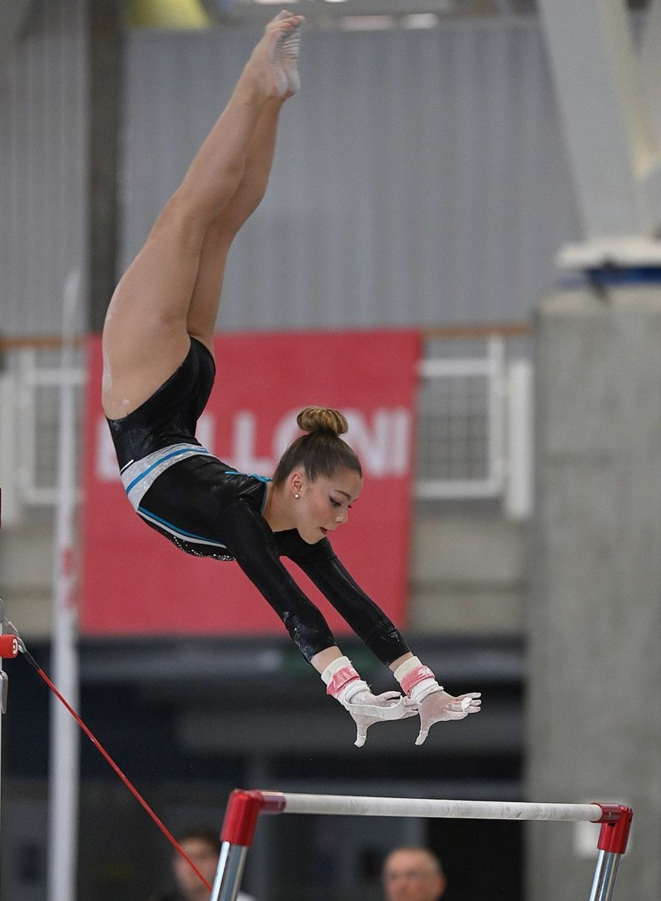
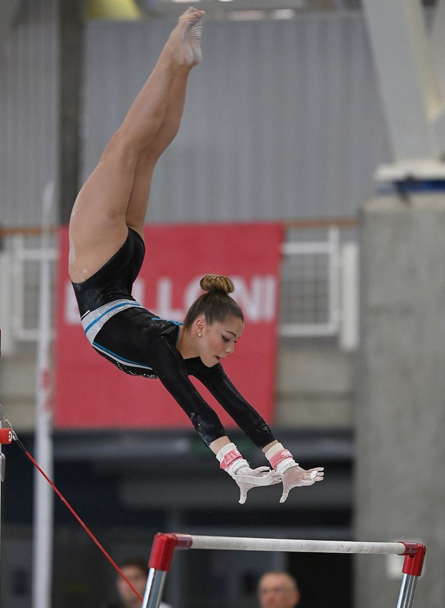

Kunstturnen ist eine Individualsportart mit dem Ziel, an Turngeräten bestimmte Übungen nach vorgegebenen Kriterien der Technik und Haltung in verschiedenen Verbindungen auszuführen.Turnen leitet sich ursprünglich ab von dem Wort „Turnier“, das schon im Mittelalter der Ausdruck für sportliche Auseinandersetzung war.
Turnen bedeutet: Vielseitiges Bewegen im Sinne der Vielfalt von Körperübungen. Es schließt vielfältige Bewegungs- und Spielformen sowie Gymnastik und zum Teil auch Tanz ein. Oft kommt es zur Gleichsetzung von Turnen und Freizeitsport. Für den Deutschen Turner-Bund steht Turnen als Oberbegriff für die von ihm vertretenen Sportarten und Bewegungsaktivitäten. Kunstturnen ist das normgeleitete Bewegen an Turngeräten, für dessen Ausführung es Technik- und Bewertungskriterien gibt. Unterschieden wird dabei zwischen dem breitensportlich orientierten Gerätturnen, bei dem der Wettkampf keine oder nur eine untergeordnete Rolle spielt, und dem leistungssportlich orientierten Gerätturnen, welches bis vor kurzem auch vom Deutschen Turner-Bund als Kunstturnen (englisch „artistic gymnastics“) bezeichnet worden ist.
Seit dem 1. Januar 2015 wurden in Hinblick auf das Internationale Deutsche Turnfest 2017 die Pflichtübungen im DTB, die sogenannten P-Übungen, mit Herausgabe der Aufgabenbücher Kunstturnen weiblich und männlich 2015 überarbeitet. Bei den Pflichtübungen muss der Turner eine vorgegebene Folge von Elementen zeigen. Die neuen P-Übungen lösen die bisherigen Übungen in Ausschreibung a (Breitensport) und b (leistungssportlicher Nachwuchs) ab und gehen bis auf die Geräte Ringe und Pauschenpferd von der leichtesten Stufe (P1) bis zur schwierigsten (P9). Dabei gibt es nun keine Unterteilung mehr für den Breitensport und für den leistungssportorientierten Nachwuchs unterteilt. Dafür gibt es nun am Sprung Alternativsprünge. Die Turnerinnen dürfen am Boden ihre Musik frei aber zur Übung passend wählen. Die P-Übungen werden unter anderem auf Turnfesten im Wahlwettkampf geturnt. Die Wettkampfausschreibung ist jahrgangsabhängig. Dadurch soll erreicht werden, dass der Nachwuchs definierte und altersgerechte Leistungsziele erreicht.
Im Wettkampfbereich, männlich, sind folgende Geräte üblich (in olympischer Reihenfolge):
- Boden
- Pauschenpferd
- Ringe
- Sprung
- Barren
- Reck
Im Wettkampfbereich, weiblich, sind folgende vier Geräte üblich (in olympischer Reihenfolge):
- Sprung.
- Stufenbarren
- Stufenbarren
- Boden
 
